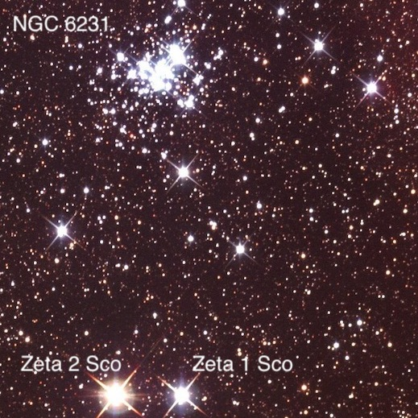
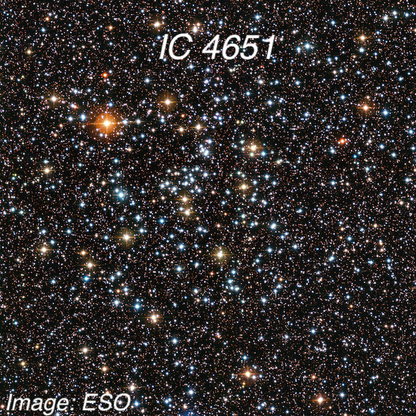
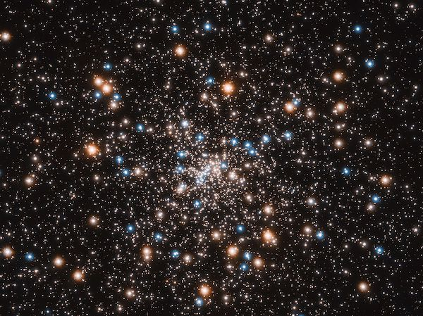
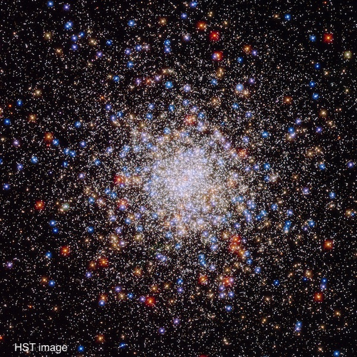
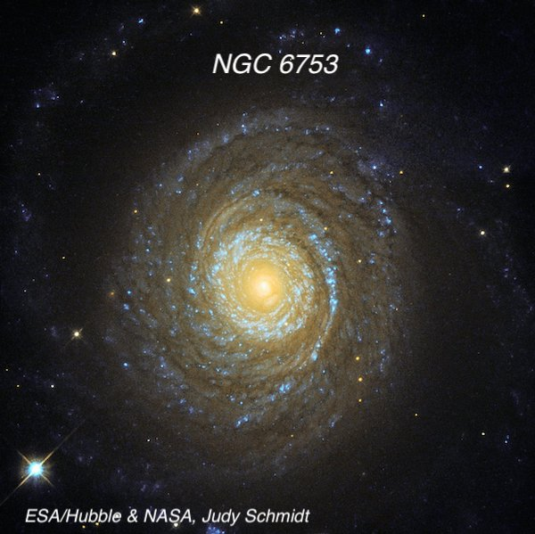

Observing near the top of Haleakala Crater
What can possibly top a week on Maui snorkeling with giant sea turtles, hiking inside the multicolored crater of Haleakala, and exploring the rain forests and wild beaches along the Road to Hāna? How about observing in Bortle 2 skies at a latitude of +20° from just below the 10,000-foot rim of Haleakala Crater?
A few weeks ago, Albert Highe described the wonders of observing at this location with former San Francisco bay area resident Casey Fukuda. A week later, my daughter happened to notice a really low-ball airfare sale to Maui and my wife was lucky to find a cancellation at a condo on a small, essentially private bay on northwest Maui. Just outside, there was easy access to a secluded snorkeling spot with abundant tropical fish and resident sea turtles. So, the trip was set in a matter of two days. Coincidentally, this turned out to be the same place Albert had stayed the previous month and that he visits each summer. Small world.
I contacted Casey by e-mail and despite his having a busy week and spending Saturday on Kauai at a wedding, he graciously offered to drive me from Kahului, the main airport in Maui, to the top of Haleakala on Sunday night (August 8th) to observe together with his computerized C-11. The only preparations I made before leaving were to quickly organize an observing list with a couple of dozen good targets that for a dark location 18 degrees south of the Bay Area. These were mostly eye-candy objects situated between -40° and -57° declination – too far south for a decent view, if visible at all, from our latitude. When I packed my suitcase, I threw in some unusual Hawaii clothing: thermal underwear, gloves, cap, heavy sweater, jacket, and a couple of red flashlights. Now I was ready to roll!
During the week leading up to Sunday night, we had a mixed bag of weather on Maui, often sunny in the morning, cloudy in the afternoon with some light showers and then clear in the evening. On Wednesday, my wife and I drove up Haleakala, an easy road despite climbing rapidly from sea level to 10,000 feet elevation. The views looking over the cloud tops and the hike into the crater was magical.
When I met Casey outside of Kahului at 5:00 PM, we could see that the top of Haleakala was clear – a very promising sign. The drive up seemed to go very quickly, and he set up his C-11 at a secluded spot below the summit. I was startled by how quickly the temperature dropped as the sun set. Puffy clouds were scattered below, and some hugged the edges of the mountain just below our elevation, but it was all clear above. Sunset was at 8:00 PM and within 30 minutes it was getting dark. By 9:00 PM, I was surprised that the Milky Way was already ablaze.
How good was the transparency? I'm not prone to hyperbole in describing observing conditions but the Milky Way was as good or better than I've ever seen it. Beyond the broad dust lane that bifurcates the Milky Way northeast of Sagittarius, the fainter western branch of the Milky Way very prominent running through Scorpius as far west as Antares. But it didn’t end here – it continued south where it brightened into a prominent star cloud in the constellation Norma (not visible from northern California). The Norma star cloud is roughly equivalent to the Scutum star cloud in size and brightness. The dark dust clouds of the Prancing Horse in Ophiuchus, consisting of the Pipe nebula (rear legs) and parallel extension to the north (front legs), as well as the main body and head were high contrast naked-eye features. Between views at the eyepiece, I also spent time scanning the Milky Way with my small 10x30 Canon IS binoculars, and picked off southern clusters not visible from home. The sky was inky black down to the southern horizon, and I was able to spot a couple of 6th-magnitude globular clusters without optical aid that were less than 10° from the horizon (NGC 6397 and NGC 6752).
Casey was very generous in letting me run through my observing list and even allowing me to operate his scope. Thank you, Casey! Seeing was soft when we first took a look at Jupiter before dark, but it steadied rapidly and showed sharp details. The only negative part of the experience was gusts of 5-10 mph that temporarily disrupted our viewing. Very late at night, we had an electrical problem that nearly ended the night in a panic (perhaps Casey will post the details!).
Here is just a sample of the objects we viewed. I haven't included any of the well-known, brighter summer targets that we looked at, including the Lagoon Nebula, Swan Nebula, Trifid Nebula, M4, M22, M11, B86, M5, M27, M15, Saturn Nebula, etc. I’m back home now and daydreaming about returning soon....
I. Open Clusters
NGC 6200
16 44 07 -47 27.8; Ara
V = 7.4; Size 12'
Using 80x, perhaps 150 stars were visible in a roughly 20' cluster. The catalogued size of 12' appears significantly too small. The cluster contained ~30 brighter stars from magnitude 9.5-11.5 over a rich background of fainter magnitude 12-14 stars. There was no distinct outer boundary, though a 7th-magnitude star is off the SE side.
NGC 6200 is a relatively young open cluster with an age of about 8.5 million years. It lies within 1° of the galactic equator, so it experiences significant reddening at a distance of about 6,700 light-years.
NGC 6231
16 54 11 -41 49.5; Scorpius
V = 2.6; Size 240'
At 103x, NGC 6231 — often called the “False Comet” — is a stunning open cluster with a half-dozen stars brighter than 7th magnitude and a dozen more down to 8th magnitude. This bright collection is set over a rich carpet of 100 to 150 fainter stars in a roughly 20' field. Naked-eye, the cluster was a prominent, elongated glow just north of Zeta Scorpii.
NGC 6231 is the dominant young cluster (2–7 million years old) at the center of the Sco OB1 association, at a distance of just over 5,000 light years. The cluster contains a large population of pre-main-sequence and early-type stars, but has ceased new star formation. NGC 6231 is host to a number of massive stars, including a Wolf–Rayet star, 15 O-type stellar systems, and at least 91 B-type stellar systems.

NGC 6242
16 55 33 -39 27.7; Scorpius
V = 6.4; Size: 9'
This 12' diameter cluster contains 80-100 stars, including a 7.3-magnitude orange star (K2-type HD 152524) on the SE side. A north-south elongated group with 10 stars of 10th magnitude is NW of the bright star. These brighter stars are set over a rich carpet of magnitude 13-14 stars. A couple of curved chains of stars form the southern boundary of the cluster.
At a distance of roughly 3,700-3,900 light years, the cluster is closer than NGC 6231, so it’s not part of the Sco OB1 association. Its age is between 40 and 50 million years, and the K2-type orange star is likely a cluster member.
NGC 6250
16 57 56 -45 56.2; Ara
V = 5.9; Size 8'
With a magnification of 127x, I found a dozen stars packed into tight 2' group. Taking a closer look, the cluster consists of a knot of six stars on the northeast side and a looping curve of five or six stars on the southwest side. This cluster "core" is surrounded by a scattered 10' group of perhaps three-dozen stars, including three brighter ones of magnitude 7.5-8.5.
This cluster has an age of about 26 million years and lies 2,800 light-years away. It resides within 2° of the galactic equator so it also suffers from significant reddening and visual extinction.
IC 4651
17 24 29 -49 56.0; Ara
V = 6.9; Size 1'
While looking at NGC 6352 in my 10x30 IS binoculars, I noticed an obvious knot 1.5° to the south – this was IC 4651. In Casey’s C-11 at 127x, I was surprised to find a beautifully rich open cluster with over 100 stars magnitude 10 to 13.5 in at least a 15' field. The stars are fairly uniform in distribution with a weak central concentration, though several form loops and chains around blank areas. This is an intermediate-age cluster (~1.2-1.4 billion-years old), and it’s situated 1° west of 2.8-magnitude Alpha Arae.

II. Globular Clusters
NGC 6352
17 25 29.1 -48 25 22; Ara
V = 8.2; Size 7.1'
At 127x, this globular appeared fairly bright, moderately large, ~5' diameter, and broadly concentrated to a 2' core. It appeared fairly well resolved into ~30 stars, particularly along the S and SW side of the halo. A few faint stars were just resolved directly over the core.
NGC 6397
17 40 41.3 -53 40 25; Ara
V = 5.8; Size 25.7'
I picked up this prominent globular cluster (6th brightest in the sky) just by sweeping around with my 10x30 Canon IS binoculars close to the SSW horizon. Once the position was pinpointed, it was just visible naked eye, less than 1° NNE of 5.3-magnitude Pi Arae.
This cluster has experienced core-collapse (massive stars have "settled" at the center after losing kinetic energy from tidal encounters with less massive stars) with an apparent size of ~5" for the collapsed core based on HST data. NGC 6397 lies at a distance of only 7,800 light years and is probably the second closest glkobular after M4.

NGC 6541
18 08 02 -43 43.0; Corona Australis
V = 6.1; Size 13.1'
This cluster was also prominent in just the 10x30mm binoculars. Using the C-11 at 127x, it was a gorgeous sight! The cluster was strongly concentrated to a small, intense 1.5' core. The halo extended to roughly 8' and was highly resolved into perhaps 100 stars. A brighter star is at the NE side of the halo, and a couple of brighter stars are at the S and SW edge of the cluster.
NGC 6541 is the 12th brightest globular and one of the nearest, at a distance of ~23,000 light years. It’s old (12.5-13 billion years) and metal-poor (~3% of solar).

NGC 6584
18 18 37.6 -52 12 55; Telescopium
V = 8.6; Size 7.9'
Using 127x, this globular appeared fairly faint, ~3.5' diameter (slightly elongated ~NNW-SSE), and broadly concentrated to a 2' core. Three 11th-magnitude stars cradle the globular on the S, E and NW sides, but these appear to be field stars. I was able to resolve a few faint stars in the halo, but the central region was an unresolved glow.
III. Galaxies
NGC 6753
19 11 23.8 -57 02 58; Pavo
V = 11.1; Size 2.5' × 2.1'
NGC 6753 was viewed at an elevation of only 12°. Still, it appeared moderately bright and large at 127x, round, 1.2' diameter, and fairly well concentrated to a small bright core. A 12th-magnitude star is off the SE edge of the halo and a 13th-magnitude star is off the SW side.
A hot, X-ray emitting corona has been mapped out to radius of 50 kpc (160,000 light years), considerably beyond the optical radius.

NGC 7090
21 36 28.9 -54 33 26; Indus
V = 10.7; Size 7.4' × 1.3'; PA = 127°
This edge-on spiral was viewed at an elevation of only 13°. NGC 7090 appeared moderately bright, fairly large, edge-on 5:1 NW-SE, 4.0' × 0.8', with a broad concentration but without a distinct core. The surface brightness was irregular or mottled at 127x. The galaxy appeared to fade suddenly in a couple of spots (possibly due to dust), specifically just southeast of a magnitude 13.5-14 star that is superposed on the SE side.
IC 5152
22 02 41.9 -51 17 44; Indus
V = 10.6; Size: 5.2' × 3.2' PA = 100°
This irregular dwarf has an 8th magnitude star superposed just north of the west end of the galaxy — needless to say, it interferes with the view! IC 5152 lies some 6.4 million light years away, just beyond the Local Group, and it appears to be isolated from any other nearby group.
Using 127x, IC 5152 was moderately bright, fairly large, elongated 2:1 ~E-W, roughly 2.5' along its major axis. With averted vision, the glow appeared to extend slightly west of the bright star, and the core was a small brightening to the east of this star.